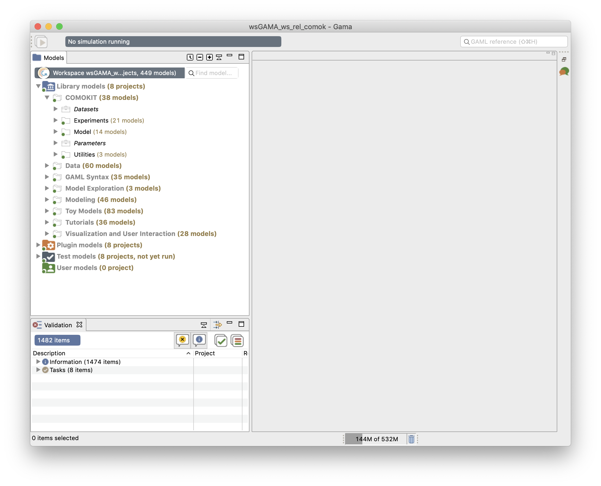

Getting Started
How to run COMOKIT locally
Table of contents
Install COMOKIT
You can install and run COMOKIT by two ways:
- you can download and run the All-In-One archive,
- you can manually install GAMA (1.8.1 or above) and import COMOKIT inside.
We do recommend you to pick the first option (especially if you are a beginner).
Bundled install (easy)
- First you should download the All-In-One archive for your system (Windows, MacOS or Linux).
- Unzip it on your computer (the place is not important).
- Open the extracted folder.
- Start the GAMA Application.
Here you are, you have an instance of COMOKIT running on your computer.

Manual install (harder)
If you want to install and run the model yourself on your computer you should:
- First, download and extract the GAMA 1.8.1 version or above (if you do not know which version to take, choose the one with JDK). If you need more information about how to install GAMA, check the installation page
- Second, download the model on GitHub (click here to download it automatically)
- Extract that ZIP file somewhere on your computer and import it on GAMA as a GAMA project (see pictures below).


How to run
- Launch your installed GAMA application
- Select an experiment to run. Bellow we selected the COMOKIT/Experiments/Lockdown/Realistic Lockdown Durations.gaml experiment.

- Click on the Early containment green button to run this experiment.
- Select which city to run the experiment on.

- GAMA will take a few seconds (depending on your computer power) to create the various simulations and displays. You should finally observe the following picture and the simulations run automatically.